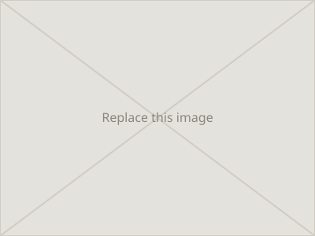

Samsung
Improving update scheduling, cancellation, and user control.
Lavanya Dhyani | Ux Designer
UX, for me, is driven by curiosity and empathy. Every project is about understanding real people and turning that into something clear, usable, and meaningful.
Improving update scheduling, cancellation, and user control.
Designing a fun multiplayer game users can learn in under 10 seconds.
Reimagining a heritage skincare brand for a new generation of consumers.
Meaningful work comes from experimentation. I love working with different mediums of design and learning from them. Welcome to my creative lab, where I have fun and experiment.

Game Trailer | Motion Graphics
Short Film | Stop Motion
2D Backgrounds | Illustration

StoryBoards | Animatics
Hi!
I'm Lavanya, a UX designer with also a background in animation and visual storytelling. My work is driven by empathy and a love of play. I'm fascinated by how people feel, move, and interact, and I believe great design, like great storytelling, should make people feel understood and included. I bring curiosity, collaboration, and a knack for turning complex problems into simple, intuitive solutions. Always experimenting, always learning. Let's create something meaningful together!